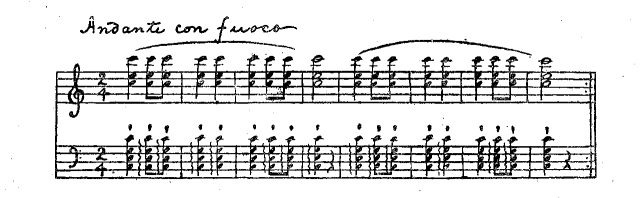

現代の多くの人間に都会と
田舎とどちらが好きかという問いを出すのは、
蛙に水と陸とどっちがいいかと聞くようなものかもしれない。
田舎だけしか知らない人には田舎はわからないし、都会から踏み出した事のない人には都会はわからない。
都鄙両方に往来する人は両方を少しずつ知っている。その結果はどちらもわからない前の二者よりも悪いかもしれない。性格が分裂して徹底した没分暁漢になれなくなるから。それはとにかく、自分は今のところでは
田舎よりも都会に生活する事を希望し、それを実行している。
田舎の生活を避けたい第一の理由は、田舎の人のあまりに親切な事である。人のする事を冷淡に見放しておいてくれない事である。たとえば雨のふる日に
傘をささないで往来を歩きたいと思ったとしても、なかなかそうはさせてくれない。鼻の先に止まった蚊をそっとしておきたいと思っても、それは一通りの申し訳では許されない。
親切であるために人の一挙一動は断えず注意深い目で四方から監視されている。たとえば何月何日の何時ごろに、私がすすけた
麦藁帽をかぶって、某の橋を渡ったというような事実が、私の知らない人の口から次第に伝わって、おしまいにはそれが私の耳にもはいるのである。個人の一挙一動は寒天のような濃厚な媒質を透して
伝播するのである。
反応を要求しない親切ならば受けてもそれほど恐ろしくないが、
田舎の人の
質樸さと正直さはそのような投げやりな事は許容しない。それでこれらの人々から受けた親切は一々明細に記録しておいて、気長にそして
なしくずしにこれを償却しなければならないのである。
そこへ行くとさすがに都会の人の冷淡さと薄情さはサッパリしていて気持ちがいい。大雨の中を頭からぬれひたって銀座通りを歩いていてもだれもとがめる人もなければ、よけいな心配をする人もない。万一受けた親切の償却も簡易な方法で行なわれる。
それだから一見閑静な田舎に住まっていては、とても一生懸命な自分の仕事に没頭しているわけにはいかない。それには都会の「人間の
砂漠」の中がいちばん都合がいい。田舎では草も木も石も人間くさい呼吸をして四方から私に話しかけ私に取りすがるが、都会ではぎっしり詰まった満員電車の乗客でも
川原の石ころどうしのように黙ってめいめいが自分の事を考えている。そのおかげで私は電車の中で難解の書物をゆっくり落ち付いて読みふける事ができる。
宅にいれば子供や老人という代表的
田舎者がいるので困るが、電車の中ばかりは全く閑静である。このような静かさは到底田舎では得られない静かさである。静か過ぎてあまりにさびしいくらいである。
これで都会に入り込んでいる「田舎の人」がいなければどんなに静かな事であろう。
今ではどうだか知らないが、私の国では村の豪家などで男子が生まれると、その次の正月は村じゅうの若い者が寄って、四畳敷き六畳敷きの大きな
凧をこしらえてその家にかつぎ込む。そしてそれに紅白、あるいは紺と白と継ぎ分けた紙の尾を幾条もつけて、西北の季節風に飛揚させる。刈り株ばかりの冬田の中を紅もめんや
うこんもめんで
頬かぶりをした若い衆が酒の勢いで縦横に駆け回るのはなかなか威勢がいい、近辺のスパルタ人種の子供らはめいめいに小さな
凧を揚げてそれを大凧の尾にからみつかせ、その断片を
掠奪しようと争うのである。大凧が充分に風をはらんで揚がる時は若者の二人や三人は引きずられるくらいの強い
牽引力をもっている。
凧揚げのあとは酒宴である。それはほんとうにバッカスの酒宴で、酒は泉とあふれ、肉は林とうずたかく、その間をパンの群れがニンフの群れを追い回すのである。
豪家に生まれた子供が女であったために、ひどく失望した若い者らは、大きな羽子板へ凧のように糸目をつけてかつぎ込んだなどという話さえある。
子供の初節句、結婚の
披露、還暦の祝い、そういう機会はすべて村のバッカスにささげられる。そうしなければその土地には住んでいられないのである。
そういう家に不幸のあった時には村じゅうの人が寄り集まって万端の世話をする。世話人があまりおおぜいであるために事務はかえって渋滞する場合もある。そして最後にはやはり酒が出なければ収まらない。
ある豪家の老人が死んだ葬式の晩に、ある男は十二分の酒を飲んで帰る途中の田んぼ道で、連れの男の首玉にかじりついて、今夜ぐらい愉快に飲んだ事は近来にないという事をなんべんもなんべんも繰り返しながらよろけ歩いていた。これなどは最も徹底的な一例であろう。
危篤な病人の
枕もとへはおおぜいの見舞い人が詰めかける。病人の頭の上へ逆さまに汗臭い油ぎった顔をさし出して、むつかしい
挨拶をしむつかしい質問をしかける。いっそう親切なのになると
瀕死の人に
いやがらせを言う。そうして病人は臨終の間ぎわまで隣人の親切を身にしみるまで味わわされるのである。
田舎の自然はたしかに美しい。空の色でも木の葉の色でも、都会で見るのとはまるでちがっている。そういう美しさも慣れると美しさを感じなくなるだろうという人もあるが、そうとは限らない。自然の美の奥行きはそう見すかされやすいものではない。長く見ていればいるほどいくらでも新しい美しさを発見する事ができるはずのものである。できなければそれは目が弱いからであろう。一年や二年で見飽きるようなものであったら、自然に関する芸術や科学は数千年前に完結してしまっているはずである。
六つになる親類の子供が去年の暮れから東京へ来ている。これに東京と国とどっちがいいかと聞いてみたら、おくにのほうがいいと言った。どうしてかと聞くと「お国の川には
えびがいるから」と答えた。
この子供の
えびと言ったのは必ずしも動物学上の
えびの事ではない。
えびのいる
清洌な小川の流れ、それに緑の影をひたす森や山、河畔に咲き乱れる草の花、そういうようなもの全体を引っくるめた
田舎の自然を象徴する
えびでなければならない。東京でさかな屋から川えびを買って来てこの子供にやってみればこの事は容易に証明されるだろう。
私自身もこの
えびの事を考えると、田舎が恋しくなる。しかしそれは現在の田舎ではなくて、過去の思い出の中にある田舎である。
えびは今でもいるが「子供の私」はもうそこにはいないからである。
しかしこの「子供の私」は今でも「おとなの私」の中のどこかに隠れている。そして意外な時に出て来て外界をのぞく事がある。たとえば郊外を歩いていて道ばたの名もない草の花を見る時や、あるいは遠くの
杉の木のこずえの神秘的な色彩を見ている時に、わずかの瞬間だけではあるが、この
えびの幻影を認める事ができる。それが消えたあとに残るものは淡い「時の悲しみ」である。
自然くらい人間に親切なものはない。そしてその親切さは
田舎の人の親切さとは全く種類のちがったものである。都会にはこの自然が欠乏していてそのかわりに田舎の「人」が入り込んでいるのである。
盆踊りというものはこのごろもうなくなったのか、それとも警察の監視のもとにある形式で保存されている所もあるかどうだか私は知らない。
私が前後にただ一度盆踊りを見たのは今から二十年ほど前に南海のある漁村での事であった。肺結核でそこに転地しているある人を見舞いに行って一晩泊まった時がちょうど旧暦の盆の幾日かであった。蒸し暑い、蚊の多い、そしてどことなく魚臭い
夕靄の上を眠いような月が照らしていた。
貴船神社の森影の広場にほんの五六人の影が踊っていた。どういう人たちであったかそれはもう覚えていない。私にはただなんとなくそれがおとぎ話にあるようなさびしい山中の
妖精の舞踊を思い出させた。そしてその時なぜだか感傷的な気分を誘われた。
その時見舞った病人はそれからまもなくなくなったのである。
私は今でも盆踊りというとその夜を思い出すが、不思議な錯覚から、その時踊っていた
妖精のような人影の中に、死んだその人の影がいっしょに踊っていたのだというような気がしてしかたがない。
そして思う。西洋くさい文明が
田舎のすみずみまで広がって行っても、盆の月夜には、どこかの山影のような所で、昔からの
大和民族の影が昔の踊りを踊っているのではあるまいかと。
盆踊りという言葉にはイディルリックなそしてセンシュアスな余韻がある。しかしそれはどうしても現代のものではない。その余韻の源にさかのぼって行くと徳川時代などを突き抜けて遠い遠い古事記などの時代に到着する。
盆踊りのまだ行なわれている所があればそこにはどこかに
奈良朝以前の民族の血が若い人たちのからだに流れているような気がしてしかたがない。そうしてそれが今滅亡に
瀕しているような悲しみを感ずる。
夏の盛りに虫送りという行事が行なわれる。大きな太鼓や鐘があぜ道にすえられて赤裸の人形が力に任せてそれをたたく。
音が四方の山から反響し、家の戸障子にはげしい衝動を与える。空には火炎のような雲の峰が輝いている。朱を注いだような裸の皮膚には汗が水銀のように光っている。すべてがブランギンの油絵を思い出させる。

耳を
聾するような音と、眼を
眩するような光の強さはその中にかえって澄み通った静寂を醸成する。ただそれはものの空虚なための静かさでなくて、ものの充実しきった時の不思議な静かさである。
はげしい音波の衝動のために、害虫がはたしてふるい落とされるか、落とされた虫がそれきりになるかどうか、たしかな事はだれもおそらく知らなかった。しかしこんな事はどうでもいいような気がする。あれはある無名の宗教の荘重な儀式と考えるべきものである。
私はここに一つの案をもっている。それはたとえば東京の
日比谷公園にある日を期して市民を集合させる。そして
田舎で不用になっている虫送りの鐘太鼓を借り集めて来てだれでもにそれをたたかせる。社会に対し、政府に対し、同胞に対しまた家族に対してあらゆる種類の不平不満をいだいている人は、この原始的楽器を原始的の努力をもってたたきつけるのである。
もう少し社会が進歩すると私のこの案を笑う人がなくなるかもしれないような気がする。
郷里からあまり遠くないＡ村に
木の
丸神社というのがある。これは
斉明天皇を祭ったものだと言われている。天皇が
崩御になった九州のある地方の名がすなわちこの村の名になっている。どういうわけでこの南海の片すみの土地がこの天皇と結びつけられるようになったのか私は知らない。たしかな事はおそらくだれにもわかるまい。それにもかかわらずこういう口碑は人の心を
三韓征伐の昔に誘う。そして現代の事相に古い民俗的の背景を与える。
この神社の祭礼の儀式が珍しいものであった。子供の時分に一二度見ただけだから、もう大部分は忘れてしまったが、夢のような記憶の中を捜すとこんな事が出て来る。
やはり農家の暇な時季を選んだものだろう。儀式は刈り株の残った冬田の上で行なわれた。そこに
神輿が渡御になる。それに従う村じゅうの家々の代表者はみんな
裃を着て、
傘ほどに大きな
菅笠のようなものをかぶっていた。そして左の手に小さな
鉦をさげて右の手に持った木づちでそれをたたく。単調な声でゆるやかな拍子で「ナーンモーンデー」と唱えると鉦の音がこれを請けて「カーンコ、カンコ」と響くのである。どういう意味だかわからない。ある人は「南門殿還幸」を意味すると言っていたがそれはあまり当てにはならない。私はむしろ意味のわからないほうがいいような気がしていた。
神輿の前で
相撲がある。しかしそれは相撲を
とるのではなくて、相撲を
取らないのである。美々しい回しをつけた力士が堂々としてにらみ合っていざ組もうとすると、
衛士だか行司だかが飛び出して来て引き分け引き止める。そういう事がなんべんとなく繰り返される。そして結局相撲は取らないでおしまいになるのである。どういう
由緒から起こった行事だか私は知らない。それにもかかわらずそれを見る人の心は遠い昔に起こったある何かしらかなり深刻な事件のかすかな反響のようなものを感ずる。
そのほか「棒使い」と言って、神前で紅白の布を巻いた棒を振り回す儀式もあったが、詳しい事はもうよくは覚えていない。
文明の波が潮のように
片田舎にも押し寄せて来て、固有の文化のなごりはたいてい流してしまった。「ナーンモーンデー」の儀式もいつのまにか廃止された。学校へ行って文明を教わっている村の青年たちには、
裃をつけて
菅笠をかむって、無意味なような「ナーンモーンデー」を唱える事は、堪え難い屈辱であり、自己を野蛮化する所行のように思われたのである。これは無理のない事である。
簡単な言葉と理屈で手早くだれにもわかるように説明のできる事ばかりが、文明の
陳列棚の上に美々しく並べられた。そうでないものは
塵塚に捨てられ、存在をさえ否定された。それと共に無意味の中に潜んだ重大な意味の可能性は葬られてしまうのである。幾千年来伝わった民族固有の文化の中から常に新しいものを取り出して、新しくそれを展開させる人はどこにもなかった。「改造」という叫び声は、内にあるもののエヴォリューションではなくて、木に竹をつぐような意味にのみもてはやされた。それであの親切な
情誼の厚い田舎の人たちは切っても切れぬ祖先の魂と影とを弊履のごとく捨ててしまった。そうして自分とは縁のない遠い異国の歴史と背景が産み出した新思想を輸入している。伝来の家や田畑を売り払って株式に手を出すと同じ行き方である。
新思想の本元の西洋へ行って見ると、かえって日本人の目にばかばかしく見えるような大昔の習俗や行事がそのままに行なわれているのはむしろ不思議である。
これはどちらがいいか、議論をするとわからなくなるにきまっている。
ただこのごろの新聞紙上をにぎわすようないろいろの不祥な社会的現象は、それが
大本教事件でも
宝塚事件でも、すべてが直接これらの事件とはなんの関係もない南海の村落でこの「ナンモンデー」の廃止された事とどこかで連関していて、むしろそれの当然の帰結であるような気がする。
そうした
田舎の
塵塚に朽ちかかっている祖先の遺物の中から新しい生命の種子を拾い出す事が、為政者や思想家の当面の仕事ではあるまいかという気もする。
（大正十年七月、中央公論）